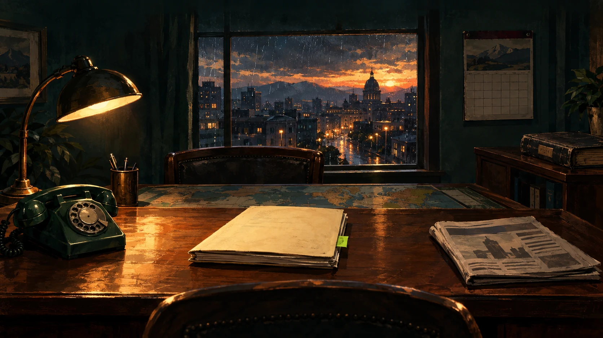

MANDATO · ETAPA A · PROPUESTA PARCIAL
El poder se vive
desde el despacho.
Realismo editorial: tinta, gouache, papel y luz de cine negro político. Una escena, una persona o un conflicto dirige la mirada; las cifras aparecen cuando se abre el expediente.
Una referencia de seis generada. ChatGPT mostró un límite de almacenamiento al adjuntarla. Las cinco imágenes restantes están pendientes. La interfaz del juego sigue intacta y la Etapa B no ha empezado.
Referencias de dirección

01 · El despacho — referencia IA pendiente de aprobación.02 · PENDIENTE DE GENERACIÓN
Una decisión, un conflicto
Huelga de transporte, rostros implicados, consejo del asesor y opciones con costos.
03 · PENDIENTE DE GENERACIÓN
La noche del voto
Semicírculo de escaños, firmeza y conteo. Los votos reales se dibujarán en SVG.
04 · PENDIENTE DE GENERACIÓN
Lo que cuenta el país
Portada marfil, titular dominante, viñeta y reacciones; texto de verdad en HTML.
05 · PENDIENTE DE GENERACIÓN
El mundo tiene peso
Relieve oscuro, bloques, rutas y estandartes sobre geometría real abierta.
06 · PENDIENTE DE GENERACIÓN
Una carrera con rostro
Retrato ficticio, biografía y carnet; cifras en el expediente que se abre bajo demanda.
Paleta y ritmo
- forest #101C18
- ink #0B100E
- paper #F4EAD3
- ochre #B98B4B
- agency #CAE86B
- crisis #9D3547
- achievement #D2AF61
Serif editorial para titulares y sans legible para datos: Source Serif 4 y Source Sans 3, propuestas con licencia abierta. Este documento usa fallbacks del sistema. Texto base 18 px; costos 16 px; blancos de interacción de 44 px; un foco y hasta tres niveles visibles.
Entrada de carta: 240 ms. Cambio de escena: 600 ms. Ceremonia de turno: hasta 1200 ms, saltable. Con movimiento reducido se muestra el resultado inmediatamente. Audio en silencio inicial, con control por canal.
Ficha y párrafo fijo · Tokens · Contrastes · Manifiesto · Créditos y fuentes oficiales
La interfaz actual
Revisión heurística de cinco segundos, sin sesiones humanas. El inicio parece formulario; congreso, lista; prensa, cuadrícula. El mapa tiene una base útil. Doce capturas locales, sin errores de página ni desbordamiento horizontal en los anchos observados.
Auditoría completa y puntos débiles · Evidencia · Aviso que detuvo la generación